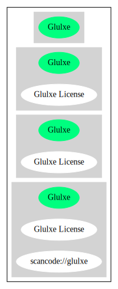

Key |
Value |
|---|---|
Fullname |
Glulxe License |
Shortname |
Glulxe |
Rating |
Unknown, probably Attention or Stop or No-Go |
Classification |
NoCopyleft |
Other Names:
scancode://glulxe
Homepage: https://fedoraproject.org/wiki/Licensing/Glulxe
SPDX: http://spdx.org/licenses/Glulxe.json
You may copy and distribute it freely, by any means and under any conditions,
as long as the code and documentation is not changed. You may also incorporate
this code into your own program and distribute that, or modify this code and
use and distribute the modified version, as long as you retain a notice in your
program or documentation which mentions my name and the URL shown above.{
"__impliedNames": [
"Glulxe",
"Glulxe License",
"scancode://glulxe"
],
"__impliedId": "Glulxe",
"facts": {
"SPDX": {
"isSPDXLicenseDeprecated": false,
"spdxFullName": "Glulxe License",
"spdxDetailsURL": "http://spdx.org/licenses/Glulxe.json",
"_sourceURL": "https://spdx.org/licenses/Glulxe.html",
"spdxLicIsOSIApproved": false,
"spdxSeeAlso": [
"https://fedoraproject.org/wiki/Licensing/Glulxe"
],
"_implications": {
"__impliedNames": [
"Glulxe",
"Glulxe License"
],
"__impliedId": "Glulxe",
"__isOsiApproved": false,
"__impliedURLs": [
[
"SPDX",
"http://spdx.org/licenses/Glulxe.json"
],
[
null,
"https://fedoraproject.org/wiki/Licensing/Glulxe"
]
]
},
"spdxLicenseId": "Glulxe"
},
"Scancode": {
"otherUrls": null,
"homepageUrl": "https://fedoraproject.org/wiki/Licensing/Glulxe",
"shortName": "Glulxe License",
"textUrls": null,
"text": "You may copy and distribute it freely, by any means and under any conditions,\nas long as the code and documentation is not changed. You may also incorporate\nthis code into your own program and distribute that, or modify this code and\nuse and distribute the modified version, as long as you retain a notice in your\nprogram or documentation which mentions my name and the URL shown above.",
"category": "Permissive",
"osiUrl": null,
"owner": "Andrew Plotkin",
"_sourceURL": "https://github.com/nexB/scancode-toolkit/blob/develop/src/licensedcode/data/licenses/glulxe.yml",
"key": "glulxe",
"name": "Glulxe License",
"spdxId": "Glulxe",
"notes": null,
"_implications": {
"__impliedNames": [
"scancode://glulxe",
"Glulxe License",
"Glulxe"
],
"__impliedId": "Glulxe",
"__impliedCopyleft": [
[
"Scancode",
"NoCopyleft"
]
],
"__calculatedCopyleft": "NoCopyleft",
"__impliedText": "You may copy and distribute it freely, by any means and under any conditions,\nas long as the code and documentation is not changed. You may also incorporate\nthis code into your own program and distribute that, or modify this code and\nuse and distribute the modified version, as long as you retain a notice in your\nprogram or documentation which mentions my name and the URL shown above.",
"__impliedURLs": [
[
"Homepage",
"https://fedoraproject.org/wiki/Licensing/Glulxe"
]
]
}
}
},
"__impliedCopyleft": [
[
"Scancode",
"NoCopyleft"
]
],
"__calculatedCopyleft": "NoCopyleft",
"__isOsiApproved": false,
"__impliedText": "You may copy and distribute it freely, by any means and under any conditions,\nas long as the code and documentation is not changed. You may also incorporate\nthis code into your own program and distribute that, or modify this code and\nuse and distribute the modified version, as long as you retain a notice in your\nprogram or documentation which mentions my name and the URL shown above.",
"__impliedURLs": [
[
"SPDX",
"http://spdx.org/licenses/Glulxe.json"
],
[
null,
"https://fedoraproject.org/wiki/Licensing/Glulxe"
],
[
"Homepage",
"https://fedoraproject.org/wiki/Licensing/Glulxe"
]
]
}